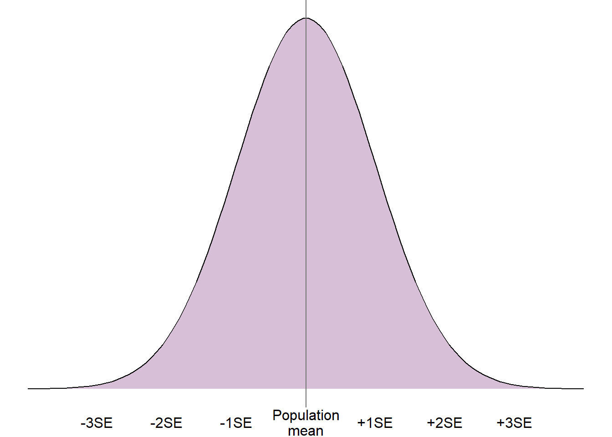
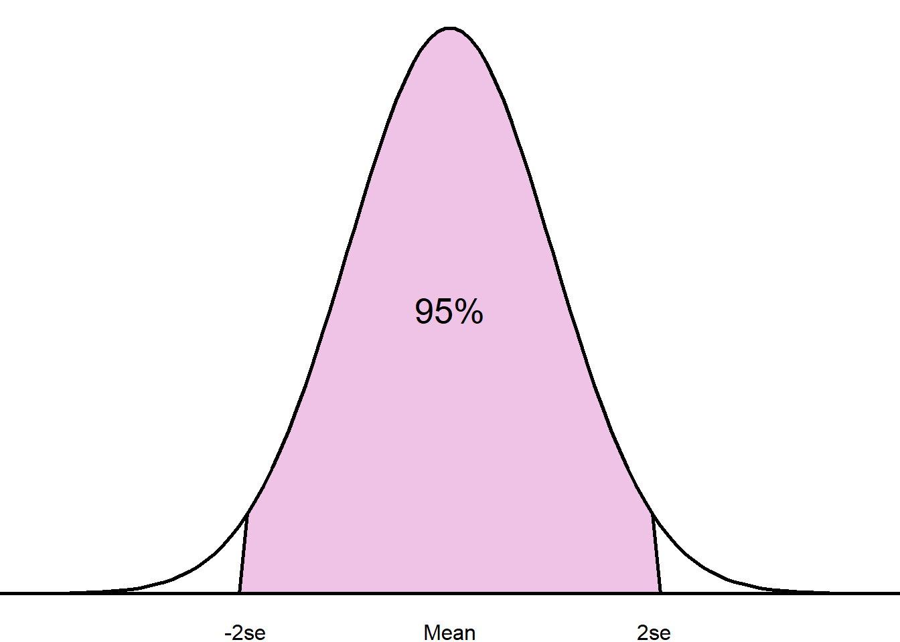
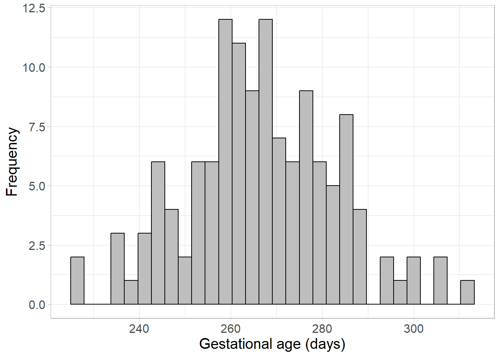
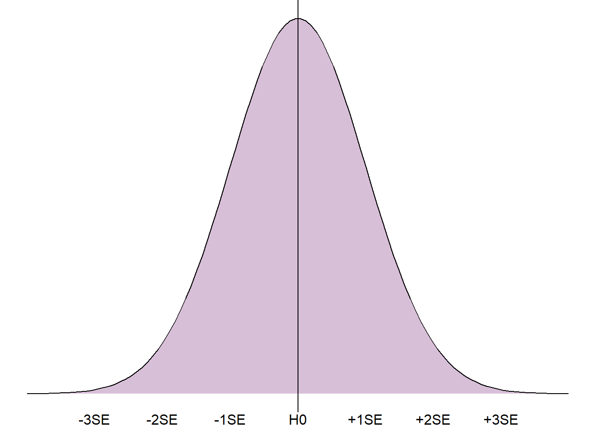
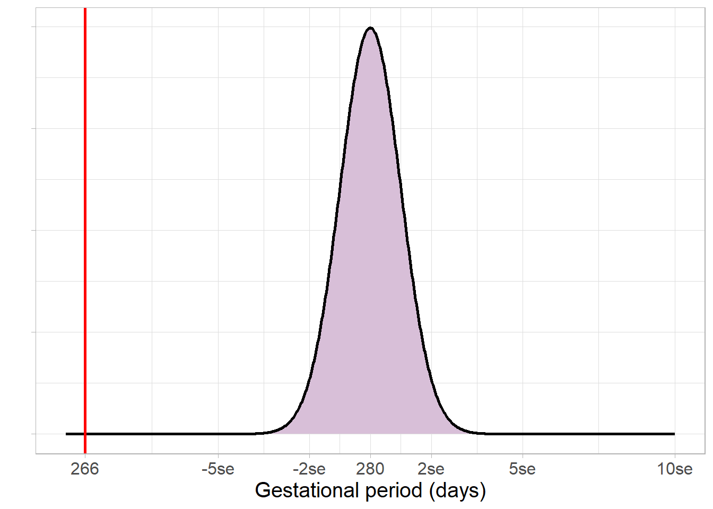

5 Inferential statistics
5.1 What are inferential statistics?
At the beginning of the course, we saw that one of the main aims of statistics is to make inferences about a target population of interest based on results of analysis applied to a random sample. These inferences require inferential statistics, namely p-values and confidence intervals. These are estimated by combining results from the random, representative sample taken from the target population, and information about the sample size and precision of the sample estimate.
5.2 Measures of precision
Inferential statistics require a measure of how precise a sample estimate is. Precision is quantified using the standard error (SE), calculated using the sample size and sample variability. The formula used to calculate a standard error depends on the type of parameter we wish to obtain from the target. For example, the standard error of a single mean (\(SE(\bar{x}\))) is found by dividing the sample standard deviation (\(SD\)) by the square root of the sample size (\(n\)):
\(SE(\bar{x}) = \frac{SD}{\sqrt{n}}\)
Regardless of the formula used or the parameter of interest, the larger a sample is, the more precise an estimate will be. Conversely, the more varied a sample is, the less precise an estimate is. A precise estimate is represented by a small standard error value. Standard errors are used to estimate inferential statistics (p-values and confidence intervals) based on the central limit theorem.
5.3 Central limit theorem
The central limit theorem states that parameter estimates (e.g. mean, difference between means) from repeated, independent random samples taken from a population will tend towards the normal distribution. This will be the case even where the target population does not follow a normal distribution. The centre/peak of the normal distribution will be the true population parameter, and the spread will be described by the standard error.
For example, if we took many random samples from a target population and found the mean of each sample, these sample means would follow a normal distribution. The mean and middle of the normal distribution would be the target population mean, and the spread would be described by the standard error of the mean.
As we know that repeated sample parameters tend to a normal distribution, we can exploit the properties of the normal distribution to understand more about the target population parameter.
5.4 Confidence intervals
A confidence interval is a range of values that the true population statistic is compatible with based on the sample estimate, precision, and some pre-defined level of confidence.
The confidence interval is created assuming the central limit theorem. As the hypothetical repeated estimates are assumed to follow a normal distribution, we can use the sample estimate of the parameter and the standard error to obtain ranges within which we would expect a certain percentage of parameter estimates to lie.
For example, if we were interested in the mean of a population (\(\mu\)), we could use the sample mean (\(\bar{x}\)) to estimate the population mean and capture a range in which 95% of the hypothetical repeated sample means would lie. The boundaries of this interval could be calculated using the formula: [\(\bar{x} \pm 1.96 \times SE(\bar{x})\)].

This 95% range is known as the 95% confidence interval. We are 95% confident that the true target population mean lies within this interval.
The confidence level can be adjusted depending on how confident we wish to be about the true population parameter. Adjusting the confidence level changes the number of standard errors we capture from the mean within our interval. For example, a 99% confidence interval contains all values within 2.58 standard errors from the sample estimate. The table below shows the number of standard errors from the sample estimate captured for different confidence levels:
Confidence | Number of |
|---|---|
80% | 1.282 |
90% | 1.645 |
95% | 1.960 |
99% | 2.576 |
99.9% | 3.291 |
5.5 Confidence interval example
We wish to make inferences about the mean gestational period (length of time from conception to the birth of a baby) in the UK. As we are not able to obtain all information from every birth in the UK, we instead collect a random sample of 130 pregnant women and measure their gestational period in days:

This sample follows a normal distribution with mean gestational period 266.55 days, and a standard deviation of 16.37. However, if we wish to make inferences about the whole of the UK, we will need to estimate inferential statistics, such as a confidence interval.
First, we calculate the standard error of the mean: \(SE = SD \div \sqrt{n} = 16.37 \div \sqrt{130} = 1.436\).
This can be combined with the sample mean, 266.55, and the confidence limit, 95%, to estimate the 95% confidence interval:
[\(266.55 - 1.96 \times 1.436, 266.55 - 1.96 \times 1.436\)] \(=\) [\(263.74, 269.37\)]
Therefore, we are 95% confident that the mean gestational period in the whole of the UK lies between 263.74 days and 269.37 days (if the sample is random and representative!).
5.6 p-values
Another commonly used inferential statistic is the p-value. A p-value is the probability of obtaining a sample estimate as extreme, or more extreme, than the current if some null hypothesis (H0) were true. The null hypothesis is usually ‘no difference’ or ‘no association’, depending on the value being tested.
If we consider the normal distribution of repeated sample estimates, the p-value is estimated by assuming the null hypothesis is true (and is therefore the peak of the distribution) and measuring how far the sample value is from this relative to the spread of the distribution (the standard error).

The closer the sample estimate is to the null hypothesis, the more likely it was to occur if the null hypothesis were true, and the higher the p-value. The further away from the null hypothesis, the less likely it would be to occur and the lower the p-value.
Results are often referred to as statistically significant if a p-value falls below a certain threshold. This threshold is often set to 0.05, or a 5% chance that an estimate as extreme as the one obtained would occur if the null hypothesis were true.
Although arbitrary cut-offs may be useful in some situations, for example where a decision needs to be taken based on the results, this is not how probability behaves. In reality, there is very little difference between a p-value of 0.049 (4.9% chance) and 0.051 (a 5.1% chance). Therefore, it is not advised to report ‘accepting’ or ‘rejecting’ a null hypothesis, despite how commonplace this is in some literature.
5.7 p-value example
Earlier, we estimated a 95% confidence interval to make inferences about the mean gestational age in the UK using a sample with a mean of 266.55 days. Now, we wish to test the null hypothesis that the mean gestational age is equal to the standard ‘due date’ of 40 weeks, or 280 days.
We begin by assuming the null hypothesis is correct, and calculate how far the sample estimate lies in the hypothetical sample estimate distribution:

The sample estimate, 266.55 days, lies very far from the hypothesised 280 days. This leads us to a very small p-value, less than 0.0001. Such a small p-value would most certainly be considered statistically significant, and provides strong evidence against the null hypothesis that this sample came from a population with a mean gestational age of 280 days.
Note that although the p-value is very small, the null hypothesis is still not considered impossible and is not rejected. This would require a p-value of 0 which is statistically impossible.
5.8 The relationship between p-values and confidence intervals
As p-values and confidence intervals are based on the same information and theories, the results are linked. For example, if a p-value is less than 0.05, the sample estimate is further than 1.96 standard errors from the null hypothesis, meaning the null hypothesis will not lie in the 95% confidence interval. Conversely, if a p-value is higher than 0.05, the sample estimate is closer to the null hypothesis and the 95% confidence interval will contain the null hypothesis.